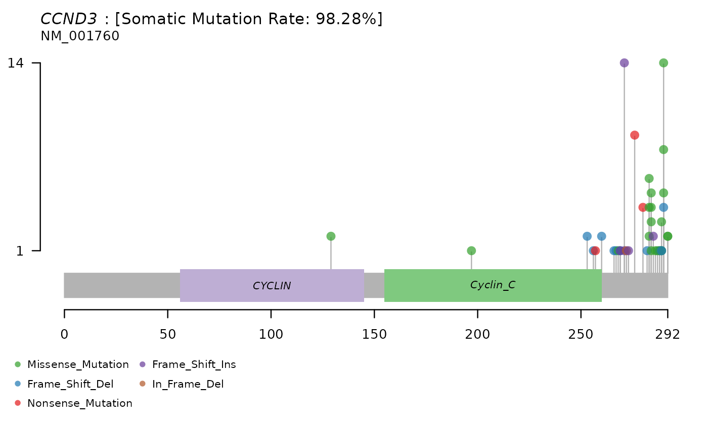

examples.RmdLoad the GAMBLR package and other packages required by these examples.
Get the metadata, automagically joining both tables and dropping normals and RNA-seq samples.
my_meta = get_gambl_metadata()
#reduce to some of the more useful metadata fields
my_meta = my_meta %>% select(sample_id,biopsy_id,myc_ba,cohort,pathology)
print(head(my_meta))
#> sample_id biopsy_id myc_ba cohort pathology
#> 1 BLGSP-71-06-00001-01A-11D BLGSP-71-06-00001-01 POS BL_Pediatric BL
#> 2 BLGSP-71-06-00004-01A-11D BLGSP-71-06-00004-01 POS BL_Pediatric BL
#> 3 BLGSP-71-06-00013-01B-11D BLGSP-71-06-00013-01 POS BL_Pediatric BL
#> 4 BLGSP-71-06-00080-01A-11D BLGSP-71-06-00080-01 POS BL_Pediatric BL
#> 5 BLGSP-71-06-00019-01A-11D BLGSP-71-06-00019-01 POS BL_Pediatric BL
#> 6 BLGSP-71-06-00008-01A-11D BLGSP-71-06-00008-01 NEG BL_Pediatric BLObtain all SV breakpoints (called by Manta) within a specific region of the genome
myc_locus_sv = get_manta_sv(region="8:128723128-128774067",pass=FALSE)
#we can override default that requires SV to meet the Manta "Pass" filtering criterion
myc_locus_sv = myc_locus_sv %>% select(tumour_sample_id,CHROM_A,START_A,CHROM_B,START_B,STRAND_A,STRAND_B,VAF_tumour)
print(head(myc_locus_sv))
#> tumour_sample_id CHROM_A START_A CHROM_B START_B STRAND_A STRAND_B
#> 1 00-15201_tumorB 8 128727469 8 128727743 + +
#> 2 01-12047_tumorC 8 128748814 14 106994498 - +
#> 3 01-14774_tumorA 8 128727469 8 128727743 + +
#> 4 01-23117_tumorB 8 128749370 14 106323836 - +
#> 5 01-23117_tumorB 8 128749348 14 106323928 + -
#> 6 02-18356_tumorB 8 128727463 8 128727752 + +
#> VAF_tumour
#> 1 0.151
#> 2 0.429
#> 3 0.163
#> 4 0.345
#> 5 0.154
#> 6 0.169Get all CN segments that overlap with a gene of interest and annotate them using the metadata.
my_segments = get_cn_segments(chromosome="4",qstart=83274467,qend=83295149)
print(head(my_segments))
#> ID chrom start end LOH_flag log.ratio
#> 1 1064-01-1TD chr4 11870 190789536 0 0
#> 2 1182-01-03TD chr4 69567 190785390 0 1
#> 3 1227-02-02TD chr4 62724209 190790246 0 0
#> 4 1242-02-01BD chr4 70761 190790246 0 0
#> 5 1296-01-03TD chr4 98530 190762427 0 0
#> 6 1318-02-04BD chr4 81303 190784332 0 0
deleted_segments = my_segments %>% filter(log.ratio<0) #use some lower value if you want to be more stringent
annotated_segments = left_join(deleted_segments,my_meta,by=c("ID" = "sample_id"))
annotated_segments %>% pull(cohort) %>% table()
#> .
#> CLL_GenomeCanada DLBCL_ctDNA DLBCL_Gascoyne DLBCL_GenomeCanada
#> 4 2 5 9
#> DLBCL_HTMCP DLBCL_ICGC DLBCL_LSARP_Trios DLBCL_Marra
#> 3 5 53 10
#> FL_GenomeCanada FL_ICGC FL_Kridel MALY_Other_ICGC
#> 1 4 6 3
#> MM_mmsanger
#> 4Retrieve all somatic mutations in a given gene and visualize them using MAFtools.
all_ssms = get_ssm_by_gene(gene_symbol=c("CCND3"),coding_only = TRUE)
all_ssms = all_ssms %>% as.data.frame()
#make a MAFtools object and plot a lollipop plot
maf_obj = read.maf(all_ssms)
#> -Validating
#> -Silent variants: 2
#> -Summarizing
#> -Processing clinical data
#> --Missing clinical data
#> -Finished in 0.244s elapsed (2.948s cpu)
lollipopPlot(maf_obj,gene="CCND3")
#> Assuming protein change information are stored under column HGVSp_Short. Use argument AACol to override if necessary.
#> 4 transcripts available. Use arguments refSeqID or proteinID to manually specify tx name.
#> HGNC refseq.ID protein.ID aa.length
#> 1: CCND3 NM_001136125 NP_001129597 220
#> 2: CCND3 NM_001760 NP_001751 292
#> 3: CCND3 NM_001136017 NP_001129489 211
#> 4: CCND3 NM_001136126 NP_001129598 96
#> Using longer transcript NM_001760 for now.